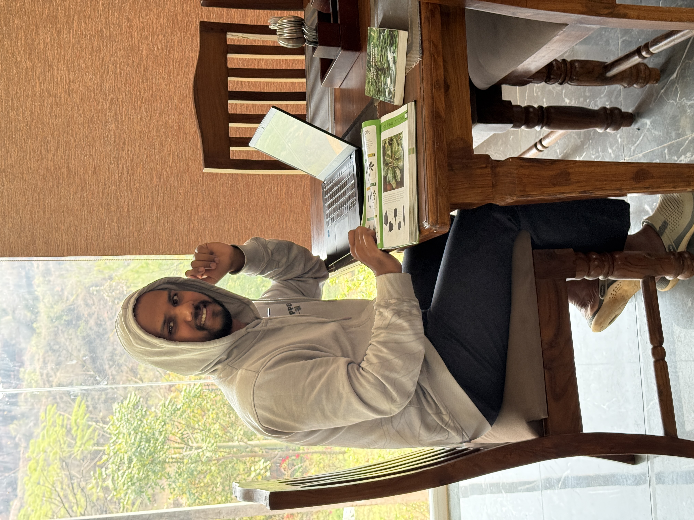
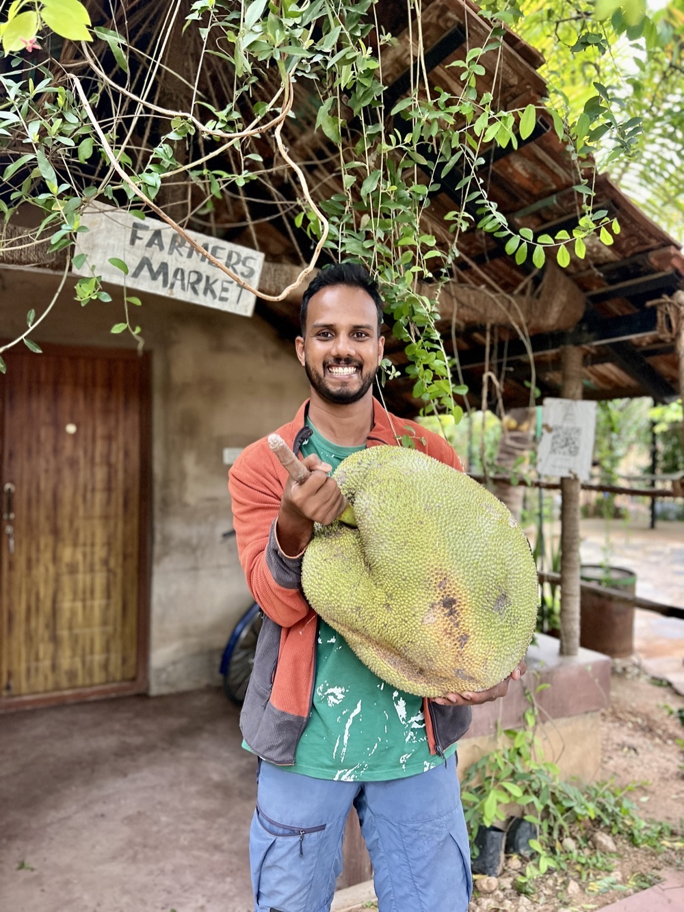
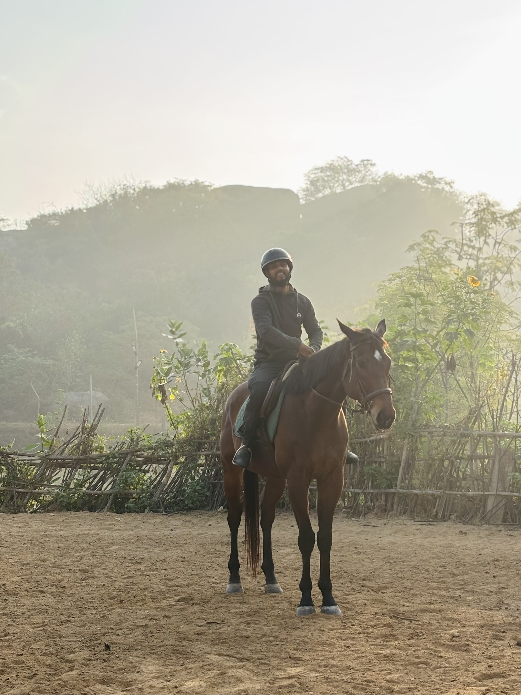
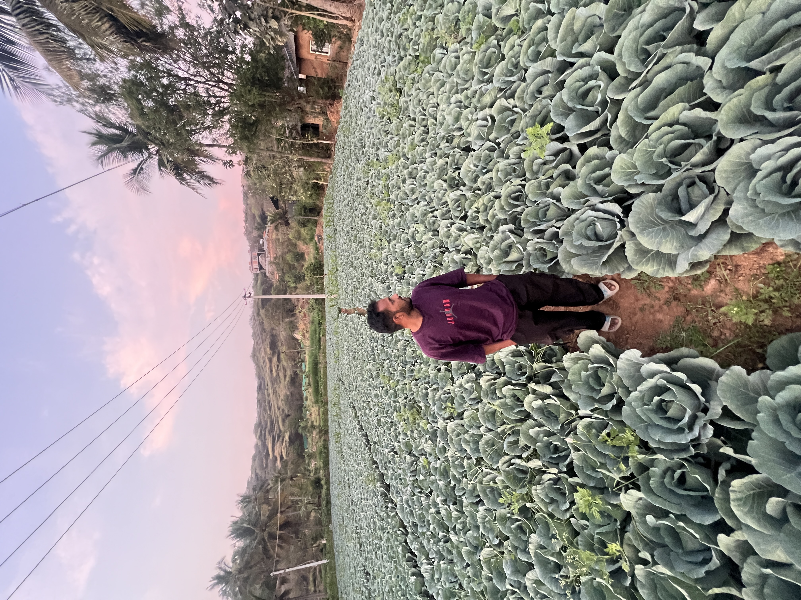

EarthwormX – Regeneration in Action
Nature doesn't need saving—it needs restoring.

Our Mission
At EarthwormX, our mission is to regenerate the land, protect native species, and empower landowners to become stewards of the Earth.
We fuse the Miyawaki technique with regenerative agriculture principles inspired by global best practices in soil, biodiversity, and water management.
From barren plot to food forest, we're your complete farming partner—designing layouts, restoring soil vitality, and managing plantations from concept to canopy.
What Drives Us
Native Ecology as Foundation
Every project begins with local biodiversity, ensuring ecosystems thrive naturally.
Community-Driven Afforestation
We work alongside local communities to build lasting green legacies.
Carbon-Positive Operations
Every forest we plant actively offsets carbon and creates climate resilience.
Nature-Based Design
Integrating natural patterns into every landscape for harmony and beauty.
Life-Centered Landscapes
Creating ecosystems that sustain generations, not just seasons.
Inspired by Earthworms
Nature's soil engineers guide our regenerative practices.
Meet Our Founder
Azhar K A





Hi, I’m Azhar.
I graduated in IT from Cochin University of Science and Technology (CUSAT), Kalamassery. After spending a few years in the IT industry, I realised I felt more at home outdoors than behind a desk.
Farming has always been part of my life. I grew up watching my grandfather, parents and uncle work in agriculture in different ways. Over time, I found myself drawn to the same path.
For the past six years, I’ve been working in farming and ecological land development, along with completing specialised agriculture courses through Kerala Agricultural University, Thrissur. A year ago, I started my own company, EarthwormX.
Today, I’m fortunate to work on projects across Rajasthan, Maharashtra, Tamil Nadu, Kerala and other parts of India.
This website is a window into my journey the work I do, the lessons I learn and the realities of building greener, more productive landscapes.
Our Services
Our Impact in 5 Years
50,000+
Native Trees Planted
20+
Miyawaki Forests Created
Tons
of CO₂ Offset
Creating lasting green legacies where once there was dust. With every project, we get one step closer to restoring balance between humanity and nature.
Why Choose EarthwormX?
We bring ecological logic into every design.
We partner with farm owners, corporates, and conscious citizens to create self-sustaining green investments.
Every project is tracked from soil health to carbon capture.
Our forests stand as climate-resilient havens that grow richer each year.
Frequently Asked Questions
Everything you need to know about our services